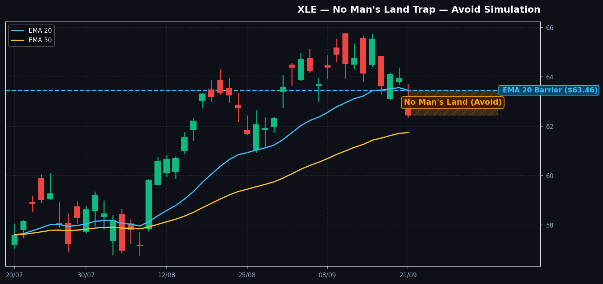

📊 סימולציית גרף מסחר מוגדלת
| סוכן בוועדה | עמדה | ציון | נימוקים מרכזיים שנשקלו |
|---|---|---|---|
| אנליסט טכני | שורי (+2) | מחיר מעל EMA 200 ב-11%, בדיקת תמיכה ב-EMA 50 ($61.78) ורצועת בולינגר, RSI 44.4 מושלם. | |
| אנליסט מומנטום | זהיר (0) | אירוע פד ב-17:05 מחייב המתנה; תזרימי האופציות (P/C 0.63) מאשרים כניסת כסף חכם לקולים. | |
| מנהל סיכונים | וטו מוחלט (-2) | וטו על סווינג במחיר הנוכחי! R:R של 1:0.71 מול ממוצע 20 נפסל מיידית; שטח הפקר מסוכן. |
